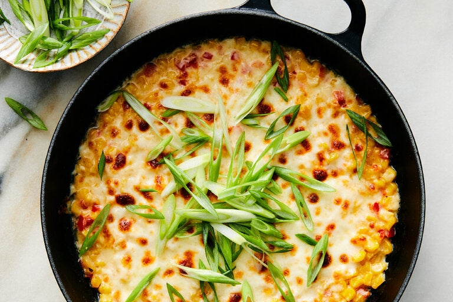

Corn Cheese

Description:
Delicious Korean corn cheese, complimented with scallions and red bell peppers. Perfect as a side for your main dish or a great main dish when combined with our beef bulgogi recipe!
Ingredients:
- 1 can corn kernels, drained
- 1/4 cup finely chopped red bell pepper
- 3 tbs mayonnaise
- 1 tsp granulated sugar
- 1/4 tsp kosher salt
- 1/8 tsp black pepper
- 1 tbsp unsalted butter
- 1 cup shredded mozarella cheese
- 1 scallion, thinly sliced
Steps:
- Heat your broiler. In a medium bowl, combine corn, bell pepper, mayonnaise, sugar, salt, and pepper.
- In an 8-inch cast-iron or ovenproof skillet, melt the butter over high. Add the corn mixture and sauté just until warmed, 2 to 3 minutes.
- Spread the mixture evenly into a single layer, then cover with cheese.
- Set the skillet on the rack nearest the broiler and cook until the cheese is golden brown in spots, about 3 to 4 minutes.
- Sprinkle with the scallions and enjoy while it's hot and cheesy!
Tip: For extra flavor, blend mozzarella with another mild, melty cheese like Muenster.